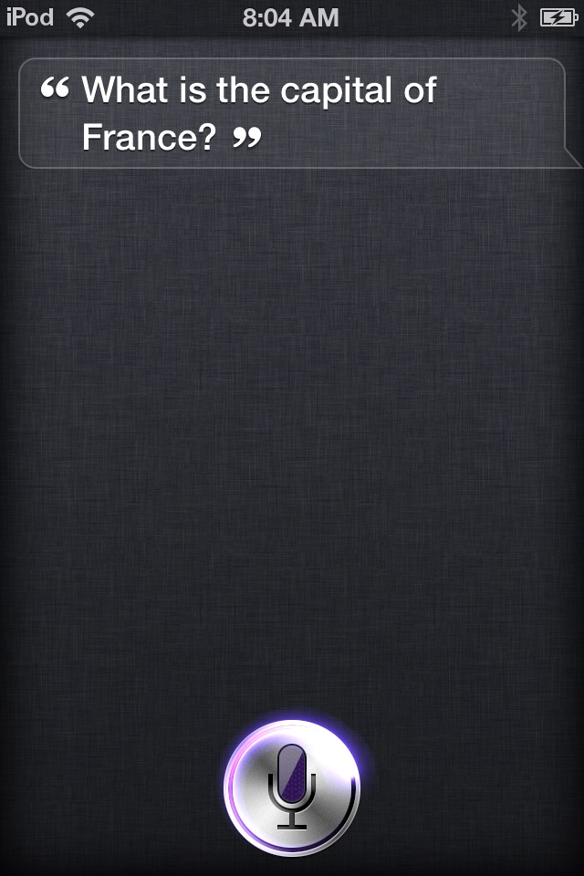

Siri on an iPod touch 4, answered on the device
How the genuine iOS 6 Siri interface came to a 2010 iPod, and how its questions are answered by speech recognition and a language model that run on the iPod's own 1 GHz core and 256 MB of RAM.
The boxed figures are live: click, drag and step through them. Every number was measured on the iPod.



Siri arrived in October 2011 with the iPhone 4S and iOS 5. The iPod touch 4th generation, sold until 2013 and updated to iOS 6.1.6, never got it. Apple's line was that Siri needed the 4S's hardware. In truth, Siri's speech recognition and answers ran on Apple's servers, which went dark years ago, so even a real 4S no longer has a working Siri.
This project gives the iPod the real thing, Apple's own interface, and answers it with a small "server" that runs on the iPod. Speech recognition is Cactus Compute's Whistle and the answers come from SmolLM2-135M-Instruct, both rewritten in plain C. Nothing leaves the device.The repository holds only original code. Apple's files come from firmware you download from Apple yourself, and stay on your machine. See the README.
1. The hardware
| Part | What it means here |
|---|---|
| Apple A4: one Cortex-A8 core at ~1 GHz with NEON | One thread of work. NEON, its SIMD unit, does 4 to 16 small multiplies per instruction, which is what makes the models usable at all. |
| 256 MB of RAM | About 46 MB is wired by the kernel and drivers. SpringBoard, the daemons and Siri take another ~60 MB, leaving roughly 100 to 130 MB for the models. |
| Memory bandwidth: 370 MB/s (measured) | Producing one word of the answer means reading every weight once: 66 MB, so at most ~5 words per second. |
| Flash: 80 MB/s read sequentially, ~6 MB/s via page faults (measured) | How a model is brought back into RAM matters more than almost anything else (§9). |
| iOS 6.1.6, jailbroken | Root access, SSH, and Cydia Substrate to patch running code. |
Everything is cross-compiled on a Mac with the compiler from Xcode 4.6.3. It's the last Apple toolchain that still targets armv7 and iOS 6, and it runs under Rosetta 2.
2. What Siri is made of
On iOS 6, Siri is several pieces that talk to each other: SpringBoard (the home screen) hosts the Siri screen, and a background daemon, assistantd, records your voice and talks to Apple's server.
SpringBoard ──── Assistant.uibundle (the Siri screen) ── AssistantUI.framework
│ │
│ AssistantServices │ XPC
▼ ▼
assistantd ── records audio (AVVoiceController), keeps the session ──▶ "ACE" over HTTPS
│
guzzoni.apple.com ◀───┘ (offline today)
The iPod has none of the files on disk. But every iOS device keeps its system frameworks in one big pre-linked file, the dyld shared cache. Comparing the iPod's cache with the iPhone 4S's turned up a surprise: the iPod already contains AssistantServices and SAObjects, probably because other features share them. Every library assistantd links against is there too.
So the shopping list is short: about 45 MB of ordinary files from the 4S's iOS 6.1.3 root filesystem, plus one binary, AssistantUI, that exists only inside the 4S's shared cache. The firmware is still on Apple's servers. Only the root filesystem image (925 MB) is fetched, from inside the IPSW zip, and it is decrypted with its published key.
3. Pulling a library out of another phone's cache
A library inside a shared cache isn't a normal library any more. When Apple builds the cache, it lays out every framework at fixed addresses and links them to each other ahead of time. It then throws away the information a library would need to load anywhere else: its relocations and the symbol references the dynamic linker would resolve. Copied out naively, AssistantUI is full of pointers into the 4S's memory map, which means nothing on the iPod.
kennytm's dyld_decache does the first part: it copies the library's segments and symbol tables back out, and copies the Objective-C selector strings it uses. At the pinned commit it wrote empty files, because a refactor had moved segment collection into a function the decacher never calls. That's a one-line fix. Even then, the result crashed the moment SpringBoard used it. port/fixdylib.py repairs the rest. Here is what it found:
Two more details mattered:
- Page alignment. The decacher packs segments back to back, so the data segment's file offset wasn't a multiple of 4 KiB. dyld maps each segment of the Mach-O file with
mmap, which requires alignment, and refused with "mmap() error 22". The tool pads the file and shifts every file offset in the load commands. - A 96 MB span. The code and data segments sit 96 MB apart, as they did in the cache, and code reaches data PC-relatively. So that gap has to stay, and dyld reserves the whole span. SpringBoard has the address space to spare.
After repair, all 24 of AssistantUI's classes load with the right superclasses, every one of its 310 method implementations points into the library, and Siri's screen appears.
4. Convincing the iPod it can run Siri
iOS asks MobileGestalt, its device-capability database, whether Siri is supported (the assistant key). SpringBoard also honours a hidden SBAssistantCapabilityOverride preference, but assistantd asks MobileGestalt directly. So a small Substrate tweak hooks MGCopyAnswer to say yes.
The first version crashed assistantd with an illegal instruction. On iOS 6, MGCopyAnswer starts with a 4-byte Thumb-2 b.w that jumps to the very next instruction. Substrate copies the first instructions of a hooked function into a trampoline. It copied that PC-relative branch unchanged, so calling the original function jumped into garbage. The fix is to hook four bytes later, past the branch.MGGetBoolAnswer, the usual hook target in later iOS versions, doesn't exist yet on iOS 6.
Code patching turned out to be unavailable inside assistantd anyway: Substrate refuses with "process is not CS_VALID". The later fixes therefore swap Objective-C method implementations (method swizzling) or rewrite symbol pointers in data pages, and never patch code.
5. A microphone without Speex
Opening Siri now worked, but every request failed instantly with "I can't take any requests right now". The system log showed mediaserverd: AudioConverterNew returned -50. Siri on iOS 6 compresses your voice with the Speex codec before sending it. The iPhone 4S's audio codecs include a Speex encoder; the iPod's don't.
The tweak intercepts -[AVVoiceController prepareRecordWithSettings:error:] and asks for 16 kHz, 16-bit mono PCM instead. That alone still failed: Siri passes a sample rate of 0, meaning "the codec's default", which PCM doesn't have. With the rate forced to 16,000, recording works. In practice the iPod usually still records Speex, and assistantd labels the stream Speex_WB_Quality8 either way. The server tells them apart by data rate: PCM is 32 kB per second, Speex about 3.5 kB. It decodes Speex with the BSD-licensed reference decoder compiled in.
There was a second, odder failure: Siri gave up because it never heard you start talking. That's correct in a silent room. For unattended tests, the tweak can report the start and end of speech itself when a test recording is present, and the server answers from that recording.
With a real person talking, a third problem showed up: Siri barely reacted. The glow around the mic button hardly moved, Siri stopped listening before the sentence was over, and nothing came back. Siri records in a "speech recognition" audio mode, and on the iPod that mode is about 15 dB quieter than the default one. Normal speech at arm's length lands around −50 dBFS, and Apple's end-of-speech detection, tuned for the iPhone 4S, misreads it. Quiet speech never counts as a start, so Siri gives up after 5 seconds. A faint noise (Siri's own listening chime, picked up by the mic) does count, so Siri decides you've finished half a second later. By then the audio is already Speex-compressed, so the tweak can't simply amplify it. Instead it replaces the detection. Speech is a buffer the Speex encoder spent real bits on (its own voice activity detection shrinks silent ones), or one 10 dB louder than the measured noise floor. It skips the first half second, where the chime is, and ends one second after the speech stops. It also raises the level meter so the glow moves. On the server side, the speech recognizer normalizes the level, and a recording with nothing in it gets a spoken "Sorry, I didn't catch that." instead of a silent failure.
6. Speaking Siri's protocol
Siri talks to its server with ACE, which the SiriProxy community and SiriServerCore documented in 2011:
- an HTTP-looking request line,
ACE /ace HTTP/1.0; - then the bytes
AA CC EE 02; - then a zlib stream in each direction. It carries binary property lists ("objects", each with a class, a group, an id and a reference id), plus pings and pongs.
acesrv is a few hundred lines of C that implement the server side. This is a real conversation with the iPod's assistantd, recorded by acesrv:
Two lessons came from the real client, both invisible to a test client:
- Sync replies. Siri waits for answers to its sync commands (
GetAnchors,Chunk) before it sends any speech. - Apple-sized timeouts. Siri's timeouts expect Apple's data centres. If no reply object arrives within seconds, it drops the connection and sends the whole request again, even while pings are being answered. Speech recognition alone takes 1.5 to 3.5 s on the iPod, and paging in the language model takes longer. So the tweak disables
ADAceConnection's response timers. acesrv runs the models on a worker thread, keeps answering pings, and attaches a resent request to the job already running instead of starting a second one.
7. Keeping Siri away from Apple
assistantd reads a Server Override preference, and it even accepts plain http:// URLs ("Connecting to insecure ace server"). So no certificate has to be trusted. The first attempt, http://127.0.0.1:4443, was quietly rejected, though. The log said "Bad server override", and Siri connected to guzzoni.apple.com instead.
That really happened during development: a handful of sessions reached Apple's server, which rejected them at session validation. The audio in those tests was silence. To make sure it can't happen again, the installer maps guzzoni.apple.com to 127.0.0.1 in /etc/hosts before anything else.
The rule, found in the disassembly: an override's host must end in apple.com, or contain apple.com:. So the override is http://guzzoni.apple.com:4443, and the hosts entry sends it, and Siri's built-in fallback, to the iPod itself.
8. The on-device brain
localsirid is a daemon with both models loaded via mmap:
- Whistle turns audio into text. It's an encoder–decoder transformer with a few unusual parts: MLPs whose weights are Kronecker products, four-lane hyper-connections between layers (mixed by a 4×4 Sinkhorn-normalised matrix), and hashed n-gram memories in the decoder. Cactus ships it as one 16.9 MB file. The C port reads that file as it is, and its transcripts match a NumPy reference, which in turn matches Cactus's own engine.
- SmolLM2-135M-Instruct (paper) writes the answer. It's stored in Whistle's weight format, 76 MB in all.
How a weight fits in 4 bits
Both models are mostly big matrices of weights, and each answer word means reading all of them once (§1: memory bandwidth). In 32-bit floats SmolLM2 alone is 538 MB, twice the iPod's RAM, so every weight has to shrink to a few bits. The trick Whistle uses, codebook quantization, is easiest to follow by starting with plain quantization and then adding four refinements. Each one fixes a problem the previous version runs into:
| Stage | Idea | Problem it fixes |
|---|---|---|
| Plain quantization | Round each weight to the nearest of a few evenly spaced levels | Starting point |
| 1. Groups | Each group of 64 weights gets its own scale | One outlier stretches the levels for the whole matrix |
| 2. Rotation | Multiply each group by a Hadamard matrix | A spike still stretches the levels inside its own group |
| 3. Codebook | Place the levels for a bell curve, not evenly | Rotated values are bell-shaped, so even levels waste precision |
| 4. Kernel | Rotate the activations once, never rebuild the weights | Decoding 135 million weights per word is too slow |
First, plain quantization. A weight is a number such as 0.137, and a float stores it in 32 bits. Quantization stores a rougher copy instead:
- Levels. Choose a small set of allowed values, called levels.
- Index. For each weight, remember only which level is nearest. With 16 levels the index fits in 4 bits, an eighth of the 32, so the model shrinks eightfold.
- Rounding error. Every weight moves to its nearest level, and the distance it moves is its rounding error. That is the price: precision.
- Scale. The simplest levels are spread evenly from −m to +m, where m is the largest weight in absolute value. That one number is stored alongside, so the levels can be turned back into real values.
Slide the number of bits and watch the error. Then add an outlier:
Adding bits helps, but there is a worse problem: the "outliers" that much of the quantization literature is about.
- Most weights are small, yet a few are much larger.
- The levels must reach the largest weight, so one outlier stretches them far apart, and the ordinary weights near zero round to just the few levels there.
- The error jumps even though almost no weight changed.
- With 2 bits there are only 4 levels to begin with, so this hurts most there.
A single scale for everything is the weak point.
Step 1: cut each row into groups.
- A weight matrix has millions of numbers, and one outlier anywhere would stretch the levels for all of them.
- So each row is split into groups of 64 weights (128 in Whistle), and each group gets its own scale. An outlier now only spoils its own group.
- The scale is the group's length (the square root of the sum of squares), stored once.
- Inside the group, each weight only has to say "which of 16 levels am I closest to", and 16 levels take 4 bits.Why groups along a row, and not down a column or in square tiles? A layer computes each output as a dot product along one row, so a scale that is constant over part of a row can be pulled out of the sum and multiplied in once per group. Rows are also read from flash in order, and the rotation in step 2 is shared by every row only when groups line up along it. Tiles are possible (some formats use 128×128 blocks) and need far fewer scales, but one outlier then spoils a much larger block. This project did not measure them.
To get a feel for what grouping buys, try it on a toy matrix of 12 rows and 64 columns. Slide the number of groups per row up from one (a single scale for the whole row) and watch the rounding error. Here the 16 levels are spread evenly up to the largest weight in each group, the plain scheme from the figure above:
Step 2: rotate the group. Grouping stops an outlier from spoiling its whole row, but inside its own group it still stretches the levels for the other 63 weights.
- What matters is how spiky the group is: its largest weight compared with the group's overall size, which is its length.
- You can't remove a spike without changing the weights.
- But you can change the axes you write them against.
Picture a group of just three weights as a point in 3D space, one weight per axis:
- The 2-bit levels, four per axis, form a grid inside a cube that just reaches the point's largest coordinate.
- A point close to an axis has one big weight and two tiny ones. Its cube must be as large as the point is long, so the grid is coarse.
- Rotating the point is the same as writing it against rotated axes. The same point, with the same length, now has no dominant coordinate: the cube shrinks, the grid gets finer, and the rounding error drops.
Things to try in the figure:
- Click a point to see its grid.
- Drag the background to look around.
- Turn the slider. At 60° the points are flattest, and at 120° they are spiky again.
- Flip the camera switch. Off, the camera stays with the axes and the points move. On, it stays with the points, and the axes and the cube turn the other way. It is the same picture seen from two places.
Why this is safe:
- Nothing is lost. A rotation keeps every point's length and can be undone exactly by rotating back, so the rounding error is the same size whichever side you measure it on.
- It costs no bits. There is nothing extra to store.
And how much it flattens depends on how many weights share the rotation. A lone spike of any size ends up, after a Hadamard rotation, equally spread over all the outputs:
| Weights in the group | Largest coordinate after rotating a lone spike |
|---|---|
| 1 (nothing to spread over) | 100% of the length |
| 3 (the figure above reaches about two thirds for all three axes at once) | at best 58% |
| 8 | 35% |
| 64 | 12.5% (1/8) |
| 128 | 8.8% |
Many rotations would do this. Whistle uses one that needs no multiplications and no stored matrix, the Walsh–Hadamard matrix. That's a square matrix whose entries are all +1 or −1 (divided by √n so it keeps lengths). The 2×2 one is [[1, 1], [1, −1]]. Each bigger one is four copies of the previous one, with the bottom-right copy negated:
Two properties make this the right tool:
- Every output mixes every input. Each output is a ± sum of all the group's weights. One large weight therefore spreads evenly over all 64 outputs instead of dominating one. Sums of many ± terms tend toward a bell curve (the central limit theorem), so the rotated group looks much more Gaussian than the original, with no lone extremes. QuIP# and QuaRot use the same idea for large models.
- It is its own inverse. The rows are orthogonal and the matrix is symmetric, so applying it twice gives back the original. Rotating loses nothing.
To see the first property at work, try it yourself. Orange is a group of weights as they come, with some outliers mixed in; blue is the same group after rotation. The histograms below the bars show where the values sit on the number line:
Why not PCA? If you have met principal component analysis, this rotation may look familiar. PCA is also a rotation, but with the opposite goal:
| PCA | Hadamard (here) | |
|---|---|---|
| Chosen from | The data: the directions many vectors vary along most | Nothing, it is fixed |
| Effect | Piles the energy into a few coordinates | Spreads the energy evenly over all coordinates |
| Good for | Compressing by dropping the small coordinates | Rounding, where a dominant coordinate is the outlier we want to avoid |
| Needs | A rotation fitted to each layer's data, and stored | No stored matrix |
| Fast form | A general matrix multiply | Add-and-subtract butterfly (step 4) |
Here are both, applied to the same 24 groups of 8 weights:
Here is the same contrast in three dimensions, where you can watch it happen:
- Each dot is a group of three weights, red when its 2-bit rounding error is large and blue when it is small.
- There is no 3×3 Hadamard matrix (they exist for sizes 1, 2, 4, 8 and so on), so the flattening rotation is the 60° turn about the diagonal from the figure above, standing in for it.
- Choose a data set and a rotation, then drag the slider from 0 to 100% of that rotation.
Neither rotation is better in general; they are tools for different jobs. When the data has no preferred direction (the first data set), PCA's axes are close to arbitrary, so a PCA rotation can help or hurt by chance. When the weights move together (the second), PCA is exactly the wrong tool for rounding: it makes every group spikier.
Step 3: snap to a codebook made for bell curves.
- Rotated groups all have roughly the same bell shape (once divided by their length), so one set of levels can serve all of them.
- The levels come from Lloyd's algorithm run on a Gaussian: dense near zero, where most values are, and sparse in the tails. That set is the codebook.
- Each weight stores the 4-bit index of its nearest level.
- With 2 bits there are only 4 levels. Whistle mixes 2- and 4-bit layers.
What each step buys, measured on random groups of 64 and on SmolLM2's real layers:
- Rotation is the big win when a group has outliers. For heavy-tailed groups it halves the error at 4 bits (18% → 9%) and cuts it from 86% to 36% at 2 bits.
- The Gaussian codebook adds a little on top, mostly at 2 bits (36% → 33%). SmolLM2's real layers are closer to Gaussian already: at 2 bits the codebook takes their error from about 40% to 34%; at 4 bits every method lands near 10%.
- So at 4 bits most of the measured quality gain for SmolLM2 came from GPTQ (below), and the format's other strength is speed, which is step 4.
What it costs to store:
- A group of 64 weights takes 64 × 4 bits plus one 32-bit length, which is 4.5 bits per weight on average, because the one length is shared by all 64.
- SmolLM2 went from 538 MB to 76 MB.
- Whistle is 16.9 MB.
Step 4: never rebuild the weights.
- To use a weight you'd normally decode it: look up its level, multiply by the length, rotate back.
- Doing that for 135 million weights per word would be slow.
- Instead the kernel uses the fact that rotating both sides of a dot product doesn't change it.
What a layer computes is the weights' dot product with the incoming numbers (the activations), and since the rotation is its own inverse:
weights · activations = (rotated weights) · (rotated activations)
= length × Σ codebook[index] × (rotated activations)
So in practice:
- The kernel rotates the activations once per group and reuses them for every row of the matrix: thousands of rows share one rotation.
- The weights stay as indices.
- On the iPod's NEON unit, one table-lookup instruction (
vtbl) turns 8 indices into 8 small integer levels. - Multiply-accumulate instructions then sum 8 or 16 products at a time.
The rotation itself is cheap thanks to the fast Walsh–Hadamard transform. Because the matrix is built by doubling, it can be applied in log₂ n rounds of add-and-subtract on pairs, the same butterfly pattern as the FFT, with no multiplications:
One more refinement is for SmolLM2 only:
- Rounding each weight to its nearest level is the simplest choice, but not the best one: the errors of neighbouring weights can add up or cancel out.
- GPTQ rounds the weights one at a time and nudges the not-yet-rounded ones to compensate, using statistics of real activations (here, from 40 chat questions).
- It ran on the Mac in a minute, in the rotated domain, with one GPTQ block per group.
Perplexity on held-out chats, where lower is better:
| SmolLM2-135M stored as | Size | Perplexity |
|---|---|---|
| 32-bit floats | 538 MB | 7.2 |
| Before: evenly spaced 4-bit layers, 8-bit embedding | 98 MB | 10.1 |
| 4-bit codebook, nearest level | 76 MB | 9.6 |
| 4-bit codebook, GPTQ rounding | 76 MB | 8.1–8.9 |
| 3-bit codebook | 59–66 MB | 29–81, unusable |
About the models and the daemon:
- The earlier pair, Moonshine Tiny (paper, 30 MB) and the evenly spaced 4/8-bit SmolLM2 (98 MB), is still supported as a fallback.
- Whistle matched Moonshine's speed on the iPod with half the memory.
- On six questions asked by a real voice, Whistle got two right and Moonshine none.
The daemon also does a few things to save time:
- It trims silence before speech recognition. Siri often keeps recording for seconds after you stop, and recognition time grows with audio length.
- It skips Siri's end tone.
- It caches the system prompt.
- It stops after two sentences, as Siri would.
9. 256 MB, shared with Siri
On its own, with a warm cache, the brain answers in about three seconds. Inside Siri, the first version took 25 to 30 seconds: speech recognition 6.4 s and the 13-token prompt 15 s. The CPU wasn't the problem; memory was. With Siri's screen, assistantd and the speech synthesizer loaded, only 3 to 8 MB of RAM is free. The models no longer fit side by side, and each stage pages its model back in from flash, one 4 KiB page fault at a time.
Shrinking the models further would cost answer quality, and Moonshine's vocabulary can't be cut the way SmolLM2's can: its token ids aren't ordered by frequency. The fix that worked was how the weights come back:
- Sequential reads. Reading the file with large
preadcalls fills the same page cache the mapping uses, at 80 MB/s instead of ~6 MB/s. - Speech model first. acesrv tells localsirid to load the speech model the moment Siri starts listening, while you're still talking.
- Language model next. Only the parts of the LLM a forward pass touches are read, right after the transcript goes back to Siri.
- Locked until the answer is done. Even right after that read, Siri's memory pressure kept evicting pages, and the model read them back one 4 KiB page fault at a time: 1,300 to 3,500 of them while reading a 13-token question, and hundreds more during the answer. So localsirid now pins the model with
mlock, one megabyte at a time as it reads it, and releases it after the answer. Page faults dropped to zero, reading the question went from 3.6–4.5 s to 2.8–3.6 s, and nothing got killed for lack of memory. What remains of the gap to the warm, Siri-less numbers is Siri's own animation, which takes about 17% of the CPU while you wait.
10. Results and what is left
Hold Home and ask. Siri shows your words about three seconds after it stops listening, and a one-sentence answer arrives about ten seconds after that. Siri then speaks it with the iPod's own voice. In live tests it got Paris, Tokyo, Shakespeare, Everest, the Moon's distance and two plus two right; "ounces in a pound" still comes out wrong. Anything harder gets the confident vagueness of a 135-million-parameter language model.
- Latency is bound by RAM. Even at 76 MB the language model is evicted while speech recognition runs, then read back in 3 s. Keeping both models resident is worse, and so is reading the language model while recognition runs: either way the system evicts pages more often. Nothing smaller than SmolLM2-135M answered reliably: Cactus's Needle 3 is built for tool calling, and a 10M chat model got basic facts wrong.
- The microphone is the weak link for real voices. The iPod's only mic is on the back, beside the rear camera, and Siri's recording mode is quiet, so a voice aimed at the screen arrives only 5–10 times louder than the room. The Mac's test voice is right most of the time; a person speaking normally, about one question in three.
- Siri's sports, maps and other skills are untouched. Every question goes to the language model.
To try it yourself you need a jailbroken iPod touch 4 on iOS 6.1.6, a Mac, and Xcode 4.6.3 from Apple. Then it's two commands:
just setup ~/Downloads/xcode4630916281a.dmg IPOD=root@<your iPod> just install
See the repository for details.
Credits: Whistle and its codebook quantization by Cactus Compute; Moonshine by Useful Sensors; SmolLM2 by Hugging Face; the ACE protocol as documented by SiriProxy and SiriServerCore; dyld_decache by kennytm; firmware keys from The Apple Wiki.